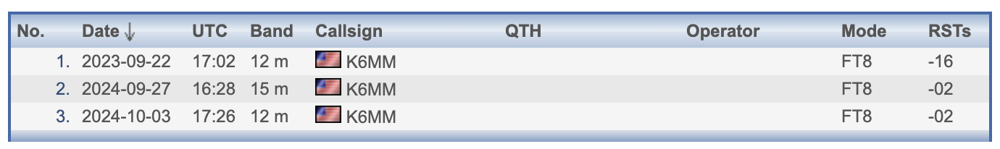

<!-- MHonArc v2.6.19+ -->
<!--X-Subject: Re: [NCDXC Chat] EP5TJS contacts confusion -->
<!--X-From-R13: &#60;ovyyNerqsyngpng.pbz> -->
<!--X-Date: Fri, 04 Oct 2024 12:19:50 &#45;0500 -->
<!--X-Message-Id: 003f01db1681$8557fd10$9007f730$@redflatcat.com -->
<!--X-Content-Type: multipart/related -->
<!--X-Reference: CA+r3BPok6ugVqfSF_nX_1m=Kx=to20W1S8Wt3DPqP5OHjC63TA@mail.gmail.com -->
<!--X-Reference: 6056D899&#45;0261&#45;4734&#45;9D4B&#45;FAD914B9ECD5@gmail.com -->
<!--X-Reference: SA1P223MB0605D4C28030EDAA0F138316DB722@SA1P223MB0605.NAMP223.PROD.OUTLOOK.COM -->
<!--X-Derived: pngihO32Pc4S2.png -->
<!--X-Head-End-->
<!DOCTYPE HTML PUBLIC "-//W3C//DTD HTML 4.01 Transitional//EN"
        "http://www.w3.org/TR/html4/loose.dtd">
<html>
<head>
<title>Re: [NCDXC Chat] EP5TJS contacts confusion</title>
<link rev="made" href="mailto:bill@redflatcat.com">
</head>
<body>
<!--X-Body-Begin-->
<!--X-User-Header-->
<!--X-User-Header-End-->
<!--X-TopPNI-->
<hr>
[<a href="msg37121.html">Date Prev</a>][<a href="msg37123.html">Date Next</a>][<a href="msg37118.html">Thread Prev</a>][<a href="msg37124.html">Thread Next</a>][<a href="maillist.html#37122">Date Index</a>][<a href="threads.html#37122">Thread Index</a>]
<!--X-TopPNI-End-->
<!--X-MsgBody-->
<!--X-Subject-Header-Begin-->
<h1>Re: [NCDXC Chat] EP5TJS contacts confusion</h1>
<hr>
<!--X-Subject-Header-End-->
<!--X-Head-of-Message-->
<ul>
<li><em>To</em>: &quot;'Jim Selmi'&quot; &lt;<a href="mailto:jselmi%40hotmail.com">jselmi@hotmail.com</a>&gt;, &quot;'Al N6TA'&quot; &lt;<a href="mailto:al.n6ta%40gmail.com">al.n6ta@gmail.com</a>&gt;, &quot;'John Miller'&quot; &lt;<a href="mailto:webaron%40gmail.com">webaron@gmail.com</a>&gt;</li>
<li><em>Subject</em>: Re: [NCDXC Chat] EP5TJS contacts confusion</li>
<li><em>From</em>: &lt;<a href="mailto:bill%40redflatcat.com">bill@redflatcat.com</a>&gt;</li>
<li><em>Date</em>: Fri, 4 Oct 2024 10:19:06 -0700</li>
<li><em>Cc</em>: &quot;'NCDXC'&quot; &lt;<a href="mailto:chat%40ncdxc.org">chat@ncdxc.org</a>&gt;</li>
<li><em>In-reply-to</em>: &lt;<a href="msg37118.html">SA1P223MB0605D4C28030EDAA0F138316DB722@SA1P223MB0605.NAMP223.PROD.OUTLOOK.COM</a>&gt;</li>
<li><em>List-archive</em>: &lt;<a href="http://mail.ncdxc.org/mailman/private/chat_ncdxc.org/">http://mail.ncdxc.org/mailman/private/chat_ncdxc.org/</a>&gt;</li>
<li><em>List-help</em>: &lt;<a href="mailto:chat-request@ncdxc.org?subject=help">mailto:chat-request@ncdxc.org?subject=help</a>&gt;</li>
<li><em>List-id</em>: NCDXC Discussion List &lt;chat.ncdxc.org&gt;</li>
<li><em>List-post</em>: &lt;<a href="mailto:chat@ncdxc.org">mailto:chat@ncdxc.org</a>&gt;</li>
<li><em>List-subscribe</em>: &lt;<a href="http://mail.ncdxc.org/mailman/listinfo/chat_ncdxc.org">http://mail.ncdxc.org/mailman/listinfo/chat_ncdxc.org</a>&gt;, &lt;<a href="mailto:chat-request@ncdxc.org?subject=subscribe">mailto:chat-request@ncdxc.org?subject=subscribe</a>&gt;</li>
<li><em>List-unsubscribe</em>: &lt;<a href="http://mail.ncdxc.org/mailman/options/chat_ncdxc.org">http://mail.ncdxc.org/mailman/options/chat_ncdxc.org</a>&gt;, &lt;<a href="mailto:chat-request@ncdxc.org?subject=unsubscribe">mailto:chat-request@ncdxc.org?subject=unsubscribe</a>&gt;</li>
<li><em>References</em>: &lt;CA+r3BPok6ugVqfSF_nX_1m=Kx=to20W1S8Wt3DPqP5OHjC63TA@mail.gmail.com&gt; &lt;<a href="msg37115.html">6056D899-0261-4734-9D4B-FAD914B9ECD5@gmail.com</a>&gt; &lt;<a href="msg37118.html">SA1P223MB0605D4C28030EDAA0F138316DB722@SA1P223MB0605.NAMP223.PROD.OUTLOOK.COM</a>&gt;</li>
<li><em>Thread-index</em>: AQGr9TbKpSaAhEcBWnY181gtEHz/fgJZMYF0AgVL+mCysiKtEA==</li>
</ul>
<!--X-Head-of-Message-End-->
<!--X-Head-Body-Sep-Begin-->
<hr>
<!--X-Head-Body-Sep-End-->
<!--X-Body-of-Message-->
<table width="100%"><tr><td style="a:link { color: blue } a:visited { color: purple } "><div class=WordSection1><p class=MsoNormal><span style='font-size:11.0pt'>Interesting&#8230;<o:p></o:p></span></p><p class=MsoNormal><span style='font-size:11.0pt'>EP5TJS is not in my log but 7X5CY is at that same time that EP5TJS has me in his on-line log.<o:p></o:p></span></p><p class=MsoNormal><span style='font-size:11.0pt'>2023-11-27, 1717 UTC, sent -11, received -11 db on 12 Meters.<o:p></o:p></span></p><p class=MsoNormal><span style='font-size:11.0pt'>Which is the same information for BOTH callsigns.<o:p></o:p></span></p><p class=MsoNormal><span style='font-size:11.0pt'><o:p>&nbsp;</o:p></span></p><p class=MsoNormal><span style='font-size:11.0pt'>7X5CY was not confirmed in LotW.<o:p></o:p></span></p><p class=MsoNormal><span style='font-size:11.0pt'><o:p>&nbsp;</o:p></span></p><p class=MsoNormal><span style='font-size:11.0pt'>Confusion reigns&#8230;<o:p></o:p></span></p><p class=MsoNormal><span style='font-size:11.0pt'><o:p>&nbsp;</o:p></span></p><p class=MsoNormal><span style='font-size:11.0pt'>Bill<o:p></o:p></span></p><p class=MsoNormal><span style='font-size:11.0pt'>WB6JJJ<o:p></o:p></span></p><p class=MsoNormal><span style='font-size:11.0pt'>Sherwood, Oregon<o:p></o:p></span></p><p class=MsoNormal><span style='font-size:11.0pt'><o:p>&nbsp;</o:p></span></p><div><div style='border:none;border-top:solid #E1E1E1 1.0pt;padding:3.0pt 0in 0in 0in'><p class=MsoNormal><b><span style='font-size:11.0pt;font-family:"Calibri",sans-serif'>From:</span></b><span style='font-size:11.0pt;font-family:"Calibri",sans-serif'> Chat &lt;chat-bounces@ncdxc.org&gt; <b>On Behalf Of </b>Jim Selmi via Chat<br><b>Sent:</b> Friday, October 4, 2024 9:14 AM<br><b>To:</b> Al N6TA &lt;al.n6ta@gmail.com&gt;; John Miller &lt;webaron@gmail.com&gt;<br><b>Cc:</b> NCDXC &lt;chat@ncdxc.org&gt;<br><b>Subject:</b> Re: [NCDXC Chat] EP5TJS contacts confusion<o:p></o:p></span></p></div></div><p class=MsoNormal><o:p>&nbsp;</o:p></p><div><p class=MsoNormal><span style='font-size:14.0pt;font-family:"Calibri",sans-serif;color:black'>I searched EP5TJS's log and he has a QSO with me on 10/12/23 on 12M FT8.<o:p></o:p></span></p></div><div><p class=MsoNormal><span style='font-size:14.0pt;font-family:"Calibri",sans-serif;color:black'><o:p>&nbsp;</o:p></span></p></div><div><p class=MsoNormal><span style='font-size:14.0pt;font-family:"Calibri",sans-serif;color:black'>My log shows S21NW, same time and sig report. S21NW doesn't use clublog or<o:p></o:p></span></p></div><div><p class=MsoNormal><span style='font-size:14.0pt;font-family:"Calibri",sans-serif;color:black'>QRZ log.<o:p></o:p></span></p></div><div><p class=MsoNormal><span style='font-size:14.0pt;font-family:"Calibri",sans-serif;color:black'><o:p>&nbsp;</o:p></span></p></div><div><p class=MsoNormal><span style='font-size:14.0pt;font-family:"Calibri",sans-serif;color:black'>EP would be an ATNO for me.<o:p></o:p></span></p></div><div><p class=MsoNormal><span style='font-size:14.0pt;font-family:"Calibri",sans-serif;color:black'><o:p>&nbsp;</o:p></span></p></div><div><p class=MsoNormal><span style='font-size:14.0pt;font-family:"Calibri",sans-serif;color:black'>73,<o:p></o:p></span></p></div><div><p class=MsoNormal><span style='font-size:14.0pt;font-family:"Calibri",sans-serif;color:black'>Jim<o:p></o:p></span></p></div><div><p class=MsoNormal><span style='font-size:14.0pt;font-family:"Calibri",sans-serif;color:black'>K6JS<o:p></o:p></span></p></div><div class=MsoNormal align=center style='text-align:center'><hr size=2 width="98%" align=center></div><div id=divRplyFwdMsg><p class=MsoNormal><b><span style='font-size:11.0pt;font-family:"Calibri",sans-serif;color:black'>From:</span></b><span style='font-size:11.0pt;font-family:"Calibri",sans-serif;color:black'> Chat &lt;<a rel="nofollow" href="mailto:chat-bounces@ncdxc.org">chat-bounces@ncdxc.org</a>&gt; on behalf of John Miller via Chat &lt;<a rel="nofollow" href="mailto:chat@ncdxc.org">chat@ncdxc.org</a>&gt;<br><b>Sent:</b> Friday, October 4, 2024 8:39 AM<br><b>To:</b> Al N6TA &lt;<a rel="nofollow" href="mailto:al.n6ta@gmail.com">al.n6ta@gmail.com</a>&gt;<br><b>Cc:</b> NCDXC &lt;<a rel="nofollow" href="mailto:chat@ncdxc.org">chat@ncdxc.org</a>&gt;<br><b>Subject:</b> Re: [NCDXC Chat] EP5TJS contacts confusion</span> <o:p></o:p></p><div><p class=MsoNormal>&nbsp;<o:p></o:p></p></div></div><div><p class=MsoNormal>Check the EP5TJS log by going to his <a rel="nofollow" href="http://QRZ.com">QRZ.com</a>&nbsp;page: &nbsp;<a rel="nofollow" href="https://www.qrz.com/db/EP5TJS">https://www.qrz.com/db/EP5TJS</a> <o:p></o:p></p><div><p class=MsoNormal><o:p>&nbsp;</o:p></p></div><div><p class=MsoNormal>Click the CLICK HERE link to go to his Hamlog.EU database. &nbsp;Type your callsign in the CALLSIGN window to list your QSOs with EP5TJS.<o:p></o:p></p></div><div><p class=MsoNormal><o:p>&nbsp;</o:p></p></div><div><p class=MsoNormal>In my case, I show 3 QSOs. &nbsp;<o:p></o:p></p></div><div><p class=MsoNormal><o:p></o:p></p><div><p class=MsoNormal><o:p>&nbsp;</o:p></p></div><div><p class=MsoNormal>The last 2 are in my log, but the 12M QSO on 2023-09-22 @ 1702z is not. &nbsp; However when I check that exact date/time in my log I show a QSO with <b>EK6YA</b> instead of <b>EP5TJS</b>. &nbsp;<o:p></o:p></p></div><div><p class=MsoNormal><o:p>&nbsp;</o:p></p></div><div><p class=MsoNormal>On the NCCCC reflector yesterday 3 of my colleagues found the exact same error. &nbsp;Phantom QSOs for EP5TJS not in their log&#8230;&#8230;but they also found EK6YA listed in their log instead of EP5TJS when checking the exact dates/times of the phantom QSOs.<o:p></o:p></p></div><div><p class=MsoNormal><o:p>&nbsp;</o:p></p></div><div><p class=MsoNormal>EK6YA on QRZ..com: &nbsp;<a rel="nofollow" href="https://www.qrz.com/db/EK6YA">https://www.qrz.com/db/EK6YA</a>&nbsp; + CLICK HERE gets you to the EK6YA database on Hamlog: &nbsp;<a rel="nofollow" href="https://www.hamlog.eu/index.php?pg=11&amp;m=list&amp;usc=13552">https://www.hamlog.eu/index.php?pg=11&amp;m=list&amp;usc=13552</a><o:p></o:p></p></div><div><p class=MsoNormal>However there are no QSOs listed for EK6YA &#8212; none have been uploaded yet.<o:p></o:p></p></div><div><p class=MsoNormal><o:p>&nbsp;</o:p></p></div><div><p class=MsoNormal>EP5TJS and EK6YA are two different hams in two different countries. &nbsp;We&#8217;ll try contacting them for an explanation but I&#8217;d be curious to know if anyone else has seen this anomaly with these guys.<o:p></o:p></p></div><div><p class=MsoNormal><o:p>&nbsp;</o:p></p><div><div><p class=MsoNormal>73<o:p></o:p></p></div><div><p class=MsoNormal>John, K6MM<o:p></o:p></p></div><div><p class=MsoNormal><o:p>&nbsp;</o:p></p></div><p class=MsoNormal><o:p>&nbsp;</o:p></p></div><div><p class=MsoNormal><br><br><o:p></o:p></p><blockquote style='margin-top:5.0pt;margin-bottom:5.0pt'><div><p class=MsoNormal>On Oct 3, 2024, at 9:01 PM, Al N6TA via Chat &lt;<a rel="nofollow" href="mailto:chat@ncdxc.org">chat@ncdxc.org</a>&gt; wrote:<o:p></o:p></p></div><p class=MsoNormal><o:p>&nbsp;</o:p></p><div><div><p class=MsoNormal>Has anyone found that their logs for EP5TJS and his logs do not match? <o:p></o:p></p><div><p class=MsoNormal>Mine is all screwed up.<o:p></o:p></p></div><div><p class=MsoNormal>He has me on 4 bands, 2 of which are not in my log.<o:p></o:p></p></div><div><p class=MsoNormal>I have him on 30 and 17 M.<o:p></o:p></p></div><div><p class=MsoNormal>My solid 30 m does not show in his.&nbsp; Paul worked him just before me.<o:p></o:p></p></div><div><p class=MsoNormal>I was active at the time/day of when he says we worked, but he is not in my ALL.txt files for those months.<o:p></o:p></p></div><div><p class=MsoNormal>Weird.<o:p></o:p></p></div><div><p class=MsoNormal>Al&nbsp; N6TA<o:p></o:p></p></div></div><p class=MsoNormal>_______________________________________________<br>Chat mailing list<br><a rel="nofollow" href="mailto:Chat@ncdxc.org">Chat@ncdxc.org</a><br><a rel="nofollow" href="http://mail.ncdxc.org/mailman/listinfo/chat_ncdxc.org">http://mail.ncdxc.org/mailman/listinfo/chat_ncdxc.org</a><o:p></o:p></p></div></blockquote></div><p class=MsoNormal><o:p>&nbsp;</o:p></p></div></div></div></div></td></tr></table>
<!--X-Body-of-Message-End-->
<!--X-MsgBody-End-->
<!--X-Follow-Ups-->
<hr>
<ul><li><strong>Follow-Ups</strong>:
<ul>
<li><strong><a name="37124" href="msg37124.html">Re: [NCDXC Chat] EP5TJS contacts confusion</a></strong>
<ul><li><em>From:</em> Al N6TA &lt;al.n6ta@gmail.com&gt;</li></ul></li>
<li><strong><a name="37126" href="msg37126.html">Re: [NCDXC Chat] EP5TJS contacts confusion</a></strong>
<ul><li><em>From:</em> Paul N6PSE &lt;pauln6pse@gmail.com&gt;</li></ul></li>
</ul></li></ul>
<!--X-Follow-Ups-End-->
<!--X-References-->
<ul><li><strong>References</strong>:
<ul>
<li><strong><a name="37105" href="msg37105.html">[NCDXC Chat] EP5TJS contacts confusion</a></strong>
<ul><li><em>From:</em> Al N6TA &lt;al.n6ta@gmail.com&gt;</li></ul></li>
<li><strong><a name="37115" href="msg37115.html">Re: [NCDXC Chat] EP5TJS contacts confusion</a></strong>
<ul><li><em>From:</em> John Miller &lt;webaron@gmail.com&gt;</li></ul></li>
<li><strong><a name="37118" href="msg37118.html">Re: [NCDXC Chat] EP5TJS contacts confusion</a></strong>
<ul><li><em>From:</em> Jim Selmi &lt;jselmi@hotmail.com&gt;</li></ul></li>
</ul></li></ul>
<!--X-References-End-->
<!--X-BotPNI-->
<ul>
<li>Prev by Date:
<strong><a href="msg37121.html">[NCDXC Chat] SPOT: UK8GAE, FT8, normal mode, 24.914, Uzbekistan</a></strong>
</li>
<li>Next by Date:
<strong><a href="msg37123.html">Re: [NCDXC Chat] EP5TJS contacts confusion</a></strong>
</li>
<li>Previous by thread:
<strong><a href="msg37118.html">Re: [NCDXC Chat] EP5TJS contacts confusion</a></strong>
</li>
<li>Next by thread:
<strong><a href="msg37124.html">Re: [NCDXC Chat] EP5TJS contacts confusion</a></strong>
</li>
<li>Index(es):
<ul>
<li><a href="maillist.html#37122"><strong>Date</strong></a></li>
<li><a href="threads.html#37122"><strong>Thread</strong></a></li>
</ul>
</li>
</ul>

<!--X-BotPNI-End-->
<!--X-User-Footer-->
<!--X-User-Footer-End-->
</body>
</html>
